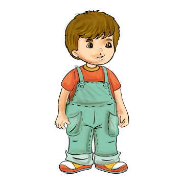

| őz | V |
póz | N |
fi-zet | L |
á-zik | N |
| ez | P |
főz | Z |
vi-zet | A |
fá-zik | K |
| méz | N |
máz | I |
kö-zép | T |
ze-ne | L |
| kéz | É |
kezd | A |
ke-zel | Á |
ze-nél | A |
Zolika
Zalánka
Zolkó
|
|||||||